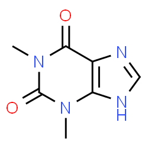
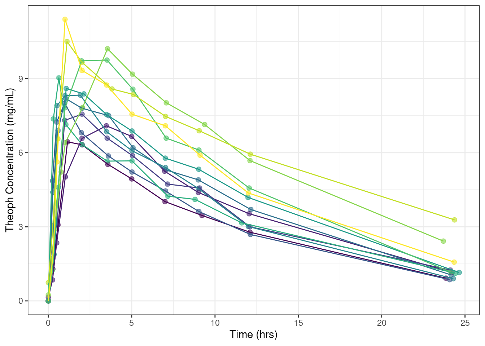
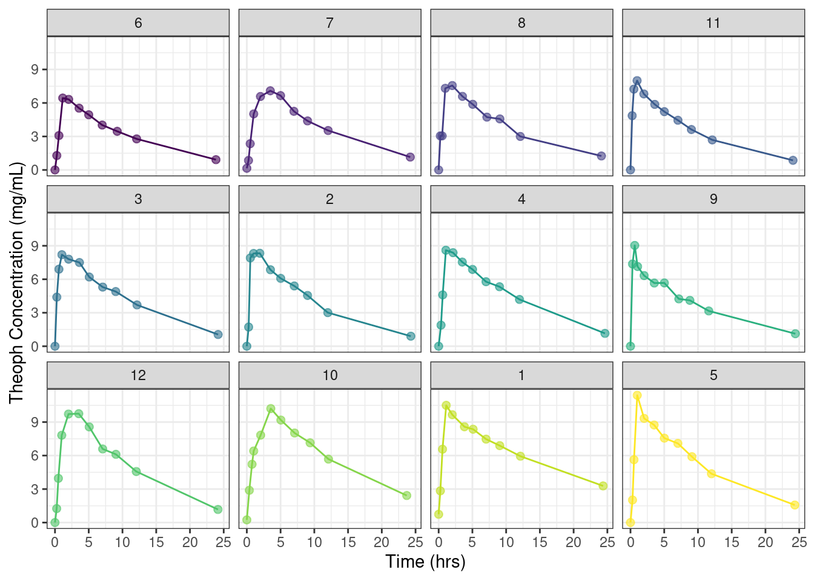

Lab Notebook for Theoph Model Development
1 Notebook 1
1.1 Background
Theophylline is a medication used to treat asthma and chronic obstructive pulmonary disease as a second-line drug. It is a bronchodilator. This activity reviews the indications, action, and contraindications for theophylline as a potential agent in treating asthma and chronic obstructive pulmonary disease. This activity will highlight the mechanism of action, adverse event profile, pharmacokinetics, and drug interactions pertinent for members of the interprofessional team in the treatment of patients with asthma and chronic obstructive pulmonary disease (Link). The chemical structure of Theoph is show below Figure 1.

1.2 Methods
1.2.1 Data
```{r}
#| label: fig-PK-profile
#| fig-cap: "Theoph PK Profiles"
#| fig-subcap:
#| - "PK Profile colored by Subject ID"
#| - "Individual PK profiles"
#| layout-ncol: 2
dataset<-Theoph
full<-ggplot(data=dataset, aes(x=Time, y=conc, group=Subject))+
geom_point(aes(color=as.factor(Subject)),size=2, alpha=0.6)+
geom_line(aes(color=as.factor(Subject)))+
theme_bw()+
guides(color="none")+
labs(x="Time (hrs)", y="Theoph Concentration (mg/mL)")
full
idv<-ggplot(data=dataset, aes(x=Time, y=conc, group=Subject))+
geom_point(aes(color=as.factor(Subject)),size=2, alpha=0.6)+
geom_line(aes(color=as.factor(Subject)))+
theme_bw()+
guides(color="none")+
labs(x="Time (hrs)", y="Theoph Concentration (mg/mL)")+
facet_wrap(~Subject)
idv
```

dataset%>%
mutate(Time = round(Time, digits = 0))%>%
group_by(Time)%>%
summarise(N=n(),
Mean = mean(conc),
Median = median(conc))%>%
gt()| Time | N | Mean | Median |
|---|---|---|---|
| 0 | 27 | 1.818889 | 1.250 |
| 1 | 21 | 7.006667 | 7.140 |
| 2 | 12 | 7.887500 | 7.815 |
| 3 | 1 | 7.090000 | 7.090 |
| 4 | 11 | 7.529091 | 7.500 |
| 5 | 12 | 6.766667 | 6.430 |
| 7 | 12 | 5.695000 | 5.350 |
| 9 | 12 | 5.080833 | 4.735 |
| 12 | 12 | 3.885000 | 3.615 |
| 24 | 11 | 1.426364 | 1.150 |
| 25 | 1 | 1.150000 | 1.150 |
1.3 Results
As discussed in Section 1.1